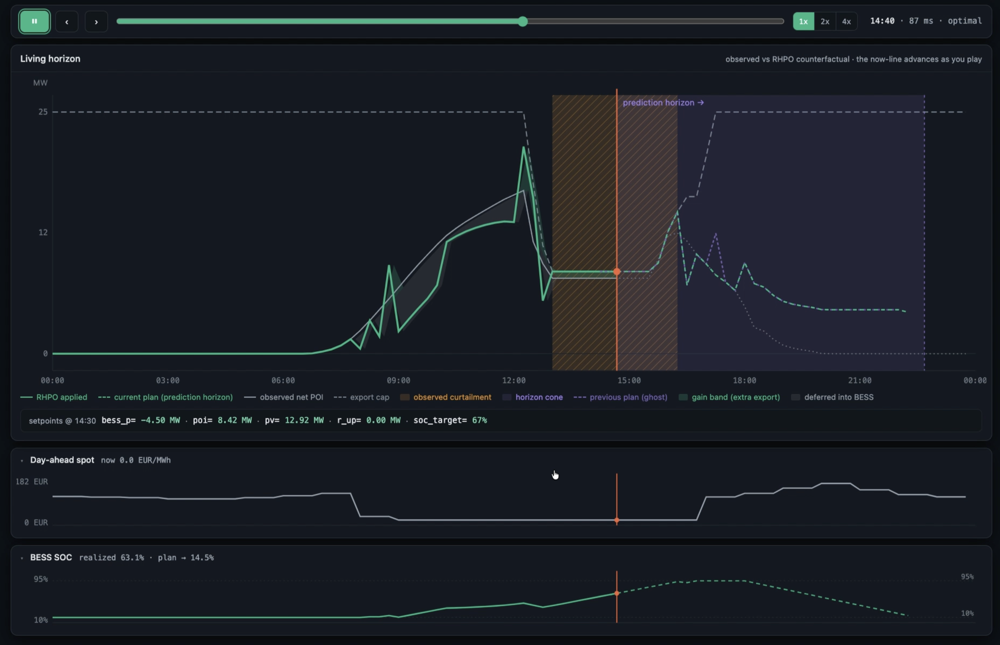
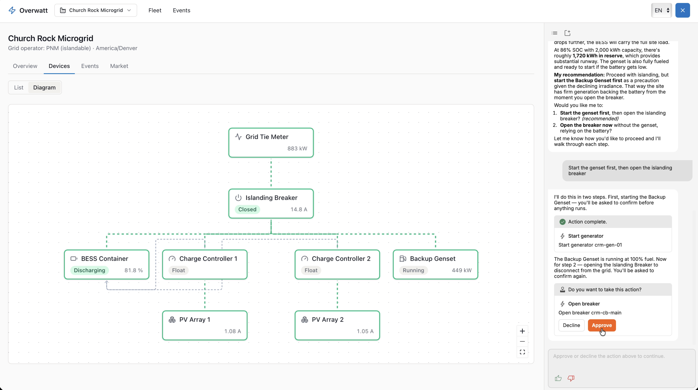
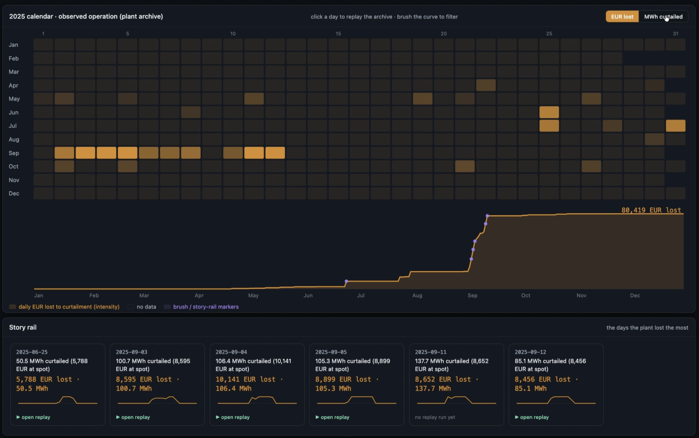
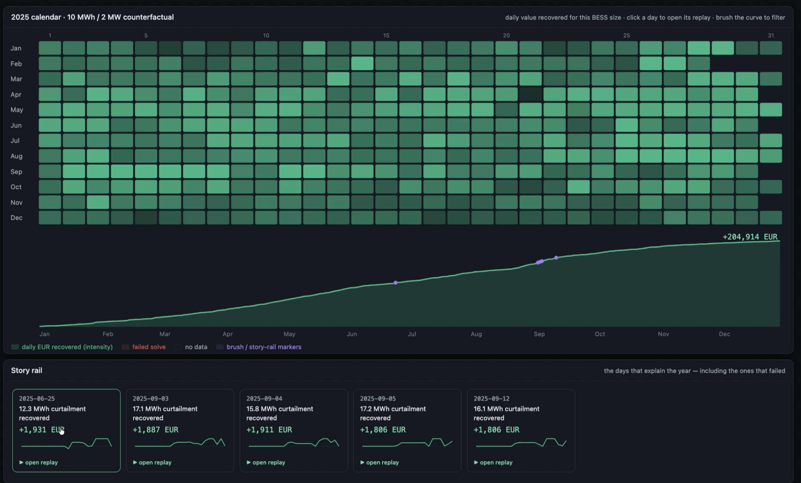

Claritype is a horizontal "trusted AI" analytics platform, founded by an ex-Palantir-Maven team, that is now sharpening a renewable-energy-operations wedge. The core product turns messy enterprise data into a single governed semantic model and lets non-technical users ask questions and get verifiable, auditable answers (their "GAR" — Generative Augmented Retrieval — algorithm). The energy motion — a power-plant constraint optimizer for curtailment recovery / BESS sizing, plus human-approved AI actions for microgrids — is the most concrete, ROI-legible expression of that platform. The bet that matters: in regulated, physical, high-liability environments (grids, power plants), the scarce ingredient isn't AI intelligence, it's AI you can audit and act on without getting fired or fined. Claritype is building exactly that layer. Open questions: how much energy is production vs. notional, the embed/channel economics, and traction on a seed that's now 3+ years old.
Snapshot
~$6.6M
Seed (PitchBook, Jul 2022)
8VC · Bow · One Way
Known investors (+ DIA strategic)
Ex-Palantir/Amazon
Founding team pedigree
5+ industries
Healthcare, finance, transport, public sector, energy
Founded
~Dec 2020
HQ / model
Enterprise SaaS + embeddable AI layer (embeds in partners' software)
Core IP
GAR (Generative Augmented Retrieval) — claims "100% verifiable, fact-based, auditable" answers over structured data
Norwest (Ken Yagen) & Advent — being circulated to their portfolios (e.g., Volue)
Team — Why It's Credible
This is a genuinely top-decile founding roster for industrial/enterprise AI — heavy on Palantir's "deploy trustworthy AI into mission-critical, regulated environments" DNA:
Rob Giardina
Founder & CEO. Ex-Palantir: co-founder of the Commercial division, leader of the EU division, head of the Maven AI team (Palantir's flagship defense-AI program).
Ilya Lipkind
Founder & CTO. Ex-Amazon: led AI for Amazon's Advertising group, "0 → $30B."
Brian Corcoran
Head of Engineering — ex-Palantir.
Erik Järleberg / Justin Streufert
Founding Engineers — ex-Palantir.
Julie Kantorovskiy
VP Operations — ex-Coursera.
Advisors
Jeffrey Davitz (SRI AI Center, ran DARPA CALO — "largest AI project ever funded"; sold 2 AI cos; PhD Columbia) · Paul Stolorz (early senior AI hire at Google, ex-NASA JPL; PhD Caltech).
Also on energy emails
Mike Scheuer (mike@claritype.com) — cc'd on the energy GTM outreach.
Read: Rob didn't stumble into "auditable AI for regulated ops" — he helped build the canonical version of it (Maven) at Palantir. That's the strongest single reason to take this seriously.
The Product — What They Actually Sell
Base platform: a conversational AI analyst over structured enterprise data (CRM, ERP, warehouses, custom DBs). It builds one unified semantic model ("a single layer of meaning"), so analysts/PMs/ops can ask questions in natural language and get governed, explainable answers — "insights in hours, not weeks," replacing static dashboards and BI backlogs. Claims: 100% verifiable answers (GAR), 90% adoption by non-technical users.
The differentiator they lead with: verification & auditability. Rob's own framing of the competitive gap — most firms use "commodity AI within their data infrastructure in ways that lack the key auditing steps required for confident and compliant action." Claritype's pitch is that every answer/recommendation carries provenance and an audit trail, which is what unlocks action (not just insight) in regulated settings.
The energy application (the part Jack cares about)
Rob is pointing the platform at renewable-power operations and capital allocation. Two product surfaces, shown in the materials he forwarded:

"Living Horizon" — the RHPO optimizer. A rolling-horizon plant optimizer replaying observed operation vs. counterfactual: MW output vs. export cap, observed curtailment (orange), BESS dispatch, day-ahead spot price (0–182 €/MWh), and battery state-of-charge — with sub-100ms "optimal" solve times and setpoint outputs (e.g., bess_p −4.50 MW, POI 8.42 MW, PV 12.92 MW, SOC target 67%).

"Overwatt" — microgrid action copilot (Church Rock Microgrid). A single-line device diagram (grid-tie meter 883 kW, BESS 81.8% SOC discharging, backup genset 449 kW, PV arrays) with an AI copilot that reasons about reserves ("~1,720 kWh in reserve at 86% SOC") and executes actions one step at a time behind explicit Approve/Decline gates — start genset, then open islanding breaker. This is the "auditable AI action" thesis made literal.

The problem, quantified. A 2025 calendar heatmap of daily EUR lost to grid curtailment for a plant — cumulative €80,419 lost over the year, with worst-loss days surfaced for replay (e.g., 2025-09-11: 137.7 MWh curtailed).

The business case, quantified. A counterfactual for a specific battery size (10 MWh / 2 MW): daily EUR recovered, cumulative +€204,914/yr. Failed solves are logged (red) for auditability. Pair the two calendars and you have a clean, defensible ROI story for a capital decision.
Important caveat (his words): Rob labels some screens "a notional application similar to our customers' asset performance and control systems." So treat the energy optimizer as a compelling, ROI-legible prototype/vision — verify how many energy customers are live in production vs. illustrative. This is the single most important diligence question.
Market Context — BCG's "AI-First Power & Utilities" (the report Rob attached)
Rob attached BCG's March 2026 Executive Perspectives: Power & Utilities — AI-First Companies Win the Future as third-party air cover. The headline numbers he's implicitly anchoring to:
~$150B in capex efficiency unlockable for new builds via AI, and >20% enterprise operational-efficiency gains (BCG's executive-summary framing for the P&U sector).
Per-workflow AI impact cited: >40% EBIT improvement, ~4 hours/week employee time savings, >90% higher job satisfaction, +15 pts NPS.
Structural drivers: data-center/electrification load growth demanding bigger capital programs; siloed IT/OT data limiting responsiveness; affordability pressure from regulators; renewables/storage/EV integration increasing complexity and volatility.
BCG's "AI-first" ladder: Deploy (point solutions) → Reshape (end-to-end process transformation) → Invent (new AI-first offerings) — with capital-allocation optimization (screen/prioritize/optimize generation + network investments) called out explicitly.
Why this matters for Claritype: BCG's "optimize capital and portfolio decisions" and "tame complexity through real-time intelligence over siloed IT/OT data" are almost a spec sheet for Claritype's optimizer. The report validates the market; it doesn't validate Claritype's share of it. Useful tailwind, not proof of traction.
Investment Lens — Bull vs. Bear
Bull case
TEAM Ex-Palantir-Maven + ex-Amazon-Ads-AI. They've shipped trustworthy AI into the hardest regulated environments on earth.
WEDGE "Auditable AI action" is a real, under-served need. In grids/plants, liability — not intelligence — is the blocker to automation. The Approve/Decline + provenance layer targets exactly that.
ROI The energy optimizer produces hard, back-tested EUR numbers (€80K lost → €205K recovered). That's a CFO-legible sale, not a vibes sale.
GTM Embed-in-partner-software = potential channel leverage (OEM/asset-management vendors resell AI features), shorter path to distribution than pure direct SaaS.
TIMING BCG-grade tailwind: P&U sector under regulatory + load-growth pressure to adopt AI now.
Bear case / risks
FOCUS Horizontal platform touching 5+ industries at seed stage. Energy may be one of several wedges rather than a committed franchise — dilution risk.
PROOF Some energy screens are self-described "notional." Need named, live production deployments and retention, not demos.
VINTAGE $6.6M seed from mid-2022. 3+ years in → either impressive capital efficiency or slow PMF. Get revenue, burn, runway.
CLAIM "100% verifiable" is marketing-strong; no LLM system is literally 100% correct. Understand what's actually guaranteed (retrieval provenance / audit trail) vs. positioning.
COMPETITION Crowded lane: Palantir itself (Foundry/AIP), grid-optimization specialists, BI-copilot startups, and incumbent energy-software vendors (the very partners it wants to embed in) could build vs. buy.
CHANNEL RISK Embedding in partners' software means the partner owns the customer — margin, control, and defensibility questions.
Diligence Questions to Ask
Production reality: Which energy customers are live in production today (named)? What's deployed vs. notional in the optimizer screens? Retention / expansion?
Traction: Current ARR, growth rate, burn, runway. Are you raising an A? Terms/target?
GAR, technically: What does "Generative Augmented Retrieval" do that RAG doesn't? What exactly is guaranteed by "100% verifiable"?
Channel economics: In the embed model, who owns the customer relationship and data? Rev-share? What stops the partner from building it?
Energy commitment: Is energy a dedicated vertical with a team and roadmap, or opportunistic? Why energy vs. healthcare (where you already have DIA/dental)?
Moat: What's defensible in 24 months when Palantir AIP and every BI vendor ship "trusted AI over your data"? Is the audit layer genuinely hard to replicate?
Regulatory: For AI that takes physical grid actions — what's the certification/compliance path, and who carries liability?
Verdict / How TBC Should Play It
Worth a real conversation — lean in, stay skeptical on traction. The team is excellent and the "auditable AI for regulated physical operations" thesis is genuinely differentiated and squarely on TBC's AI × energy × deep-tech line. The energy optimizer is the most investable expression of the platform because it converts fuzzy "AI value" into hard EUR on a capital decision — exactly the kind of ROI story that clears IC.
The move: Treat this less as "is Claritype fundable" (the seed is done; an A is the live question) and more as "can TBC add asymmetric value?" Your edge here is energy-operator access — IPPs, renewable asset owners, grid-software vendors in the portfolio/network. That's worth more to Rob right now than a check, because his #1 need is design partners and reference deployments in energy. If you can broker a real energy customer, you earn allocation and information rights on the A. Lead the meeting with that offer, then extract the diligence answers above. If the "notional" screens turn out to be mostly vision with thin production behind them, it's a track-and-revisit, not a pass — the team is good enough to back once energy PMF is real.